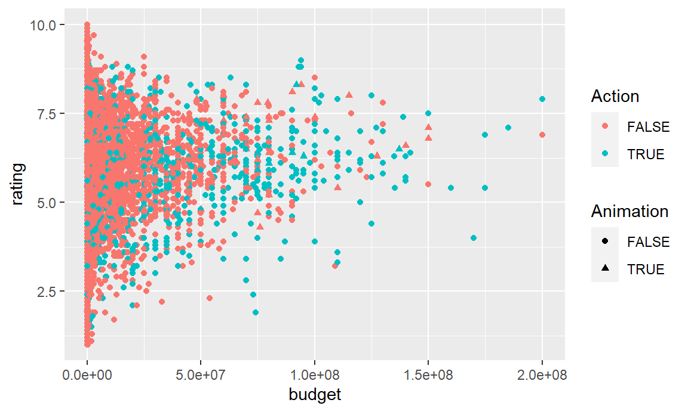
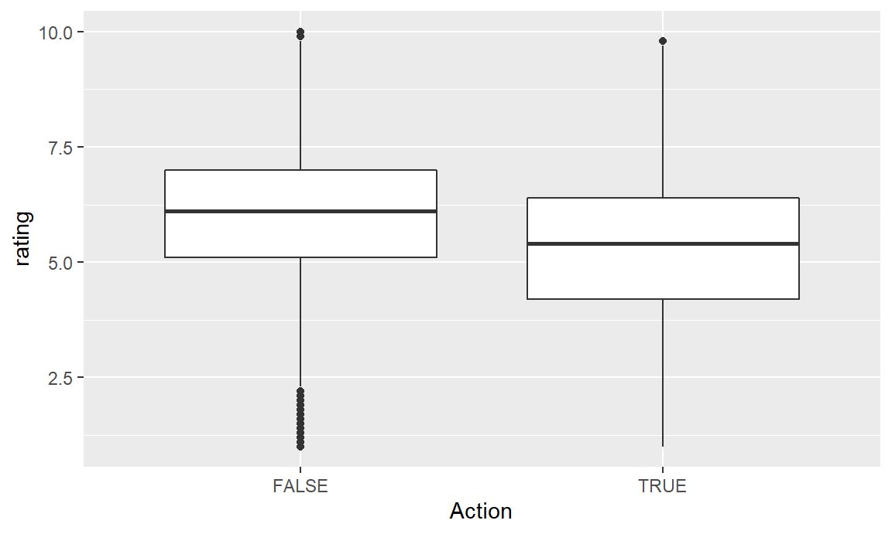
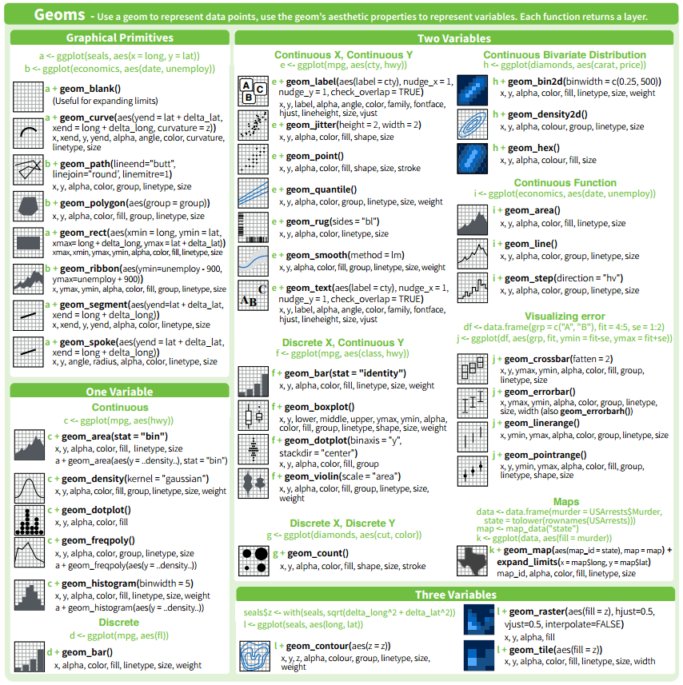
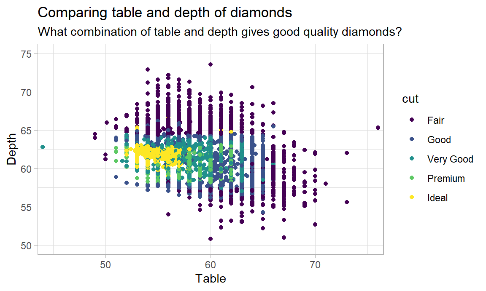
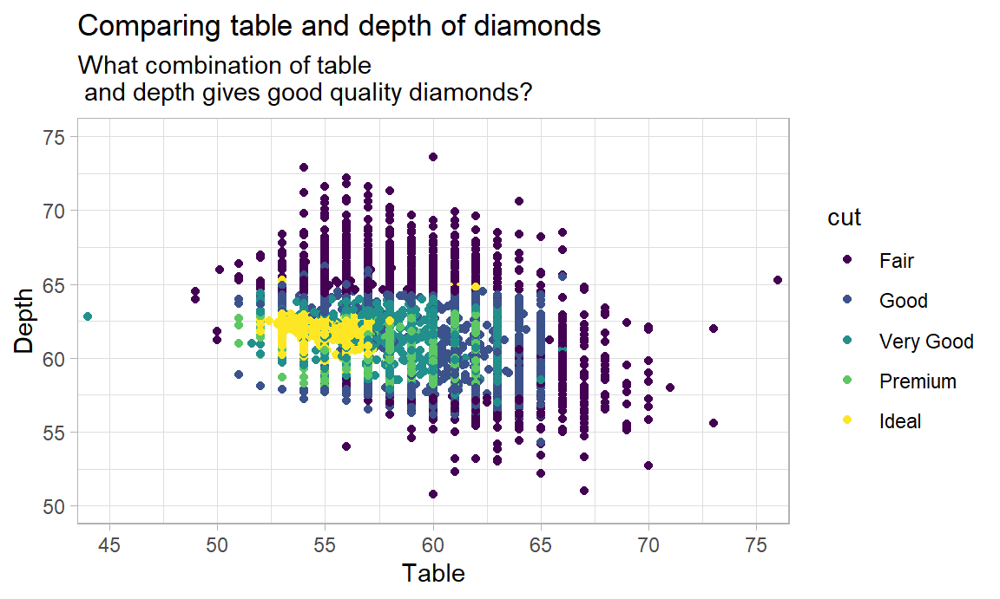

Chapter 3 Tutorial - Data visualisatie
3.1 Voor je begint
Voordat je met deze zelfstudie begint, moet je eerst het pakket ggplot2 installeren, als je dat nog niet gedaan hebt. Je kunt dit doen met de volgende regel code:
In ieder geval, moet je het pakket in je sessie laden.
Je hebt ook twee datasets nodig, movies en diamonds. Beide worden als .RDS bestand bij deze tutorial geleverd.
3.2 Introductie
Het maken van een plot met ggplot2 begint met de ggplot() functie. De ggplot functie heeft twee belangrijke argumenten
- data: dit definieert de dataset die voor de plot moet worden gebruikt. Dit moet een data.frame zijn.
- mapping: de mapping zal bepalen hoe de variabelen worden mapped op de esthetica2 van de plot, zoals verderop zal worden uitgelegd. Deze mapping moet altijd worden gemaakt met de
aes()functie .
We willen bijvoorbeeld een scatterplot maken van de films, waarbij we de x-as gebruiken voor hun budget en de y-as voor hun waardering. We roepen ggplot dan als volgt aan:
Zoals je ziet, creëert deze regel code een plot met de assen zoals gedefinieerd. Er worden echter geen gegevens gevisualiseerd. De reden hiervoor is dat ggplot nog niet weet hoe we het willen visualiseren. We moeten wat genoemd wordt een geometrische layer toevoegen. Om een scatterplot te maken, die uit punten bestaat, voegen we geom_point aan de plot toe.

Dit lijkt er al meer op. Merk op dat de geometrische laag aan de plot is toegevoegd door gebruik te maken van het + symbool. Op deze manier kunnen meerdere lagen aan dezelfde plot worden toegevoegd, evenals titels, labels, en configuraties van de lay-out, zoals we verderop zullen zien.
Merk op dat we de mapping van de aesthetics ook in de geometrische laag zelf kunnen plaatsen. Dit maakt onze code voorlopig iets leesbaarder, omdat we de geometrische layer en de mapping ervan op dezelfde regel plaatsen.

We hebben nu onze allereerste plot gemaakt! In de volgende secties zullen we leren hoe we verschillende geom-layers en aesthetics kunnen gebruiken en hoe we de lay-out van onze grafieken kunnen verbeteren.
3.3 Verschillende geometrics
Naast geom_point bestaan er nog veel meer verschillende geometrieën om gegevens in ggplot te plotten. Je kunt ze bekijken door ‘geom_’ in het console in te typen en door de auto-complete-lijst te navigeren. Elk van de geom-layers komt met zijn eigen specifieke set van aesthetics die in kaart gebracht kan (en soms moet) worden. In deze tutorial zullen we ons vooral richten op de volgende geometrische lagen:
- geom_point
- geom_histogram
- geom_boxplot
- geom_violin
- geom_bar
- geom_col
3.3.1 geom_point
We hebben geom_point al gebruikt om onze eerste grafiek te maken, waarbij we twee variabelen in kaart brachten op de esthetica x en y. Er zijn echter nog enkele andere aesthetics’s die met deze laag kunnen worden ingesteld. Laten we ze eens in meer detail bekijken.
- x: dit bepaalt de positie van de punten langs de x-as
- y: hiermee bepaal je de positie van de punten langs de y-as
- color: hiermee bepaal je de kleur van de punten
- shape: hiermee bepaal je het type punten dat uitgezet moet worden3
- fill: hiermee bepaal je hoe de punten gevuld worden (voor vormen 21-25)
- size: hiermee bepaal je de grootte van de punten
- stroke: hiermee bepaal je de breedte van de rand
- alpha: hiermee bepaal je de mate van doorzichtigheid
De onderstaande grafiek bijvoorbeeld toont zwarte driehoeken, gevuld met rood, met een grootte van 2. Merk op dat de positie van de driehoeken precies dezelfde is als de positie van de punten in de vorige grafiek.
ggplot(data = movies) +
geom_point(mapping = aes(x = budget, y = rating),
shape = 24,
fill = "red",
color = "black",
size = 2)Maar wacht, er is hier iets belangrijks aan de hand! Terwijl de x- en y-aesthetics binnen de aes-mapping werden gedefinieerd, werden de andere aesthetic erbuiten gedefinieerd. Waarom is dat?
In feite kunnen aesthetics op twee verschillende manieren worden ingesteld:
- Ze kunnen worden mapped naar een variabele in de dataset.
- Ze kunnen worden ingesteld op één vaste waarde.
In ons voorbeeld worden x en y gekoppeld aan twee variabelen in de gegevens, nl. budget en rating, terwijl de andere aesthetics, vorm, fill, color en size, worden ingesteld op vaste waarden. Hoewel sommige aesthetics typisch altijd gemapt worden, zoals x- en y-posities, kunnen sommige andere zowel een vaste waarde als een gemapte variabele zijn. Bijvoorbeeld, wat gebeurt er als we de kleur van punten toewijzen aan een variabele, zeg de variabele Action.

We zien dat de punten nu gekleurd zijn met betrekking tot de waarde in de variabele Action. Action films krijgen een groene kleur, terwijl andere films een rode kleur krijgen, wat we kunnen zien in de legende die verscheen.
Ook de andere vaste aesthetics kunnen worden gebruikt in een mapping. Het volgende voorbeeld gebruikt de variabele Animatie voor de shape.
ggplot(data = movies) +
geom_point(mapping = aes(x = budget,
y = rating,
color = Action,
shape = Animation))
Geweldig! We begrijpen nu volledig de geom_point laag, en de werking van de aesthetics-mapping. Nu is het tijd om enkele andere geometrische layers te bekijken. We beginnen met histogrammen.
3.3.2 geom_histogram
De geom_histogram layer kan worden gebruikt om een histogram uit te zetten. Zoals je al zou moeten weten, geeft een histogram de verdeling van een continue variabele weer. Bijgevolg moet er alleen een x-aesthetic worden ingesteld, en geen y-aesthetic. De volledige lijst van aesthetic’s is als volgt:
- x: dit bepaalt de variabele die gebruikt moet worden
- color: hiermee bepaal je de kleur van de randen
- fill: hiermee bepaal je met welke kleur het histogram gevuld wordt
- size: hiermee bepaal je de grootte van de rand
- linetype: hiermee bepaal je het type van de rand4
- alpha: hiermee bepaal je de mate van doorzichtigheid
- weight: hiermee bepaal je hoe de waarnemingen gewogen moeten worden. Standaard wordt elke waarneming als één gewogen.
Gebruik makend van onze kennis over het gebruik van aesthetics van voorheen, is het nu heel eenvoudig om een histogram te maken. Laten we een histogram maken voor de beoordeling van films. We geven het een zwarte rand met een witte vulling. Klaar om te proberen?

Merk op dat verschillende dingen werden weggelaten in deze twee lijnen van codes. In het bijzonder de argumentnaam data in ggplot, mapping in geom_histogram en x in aes. Aangezien we weten dat dit de eerste argumenten van deze functies zijn, kunnen we ze veilig weglaten, zolang we de juiste volgorde van argumenten aanhouden. We kunnen echter color en fill niet weglaten, omdat dit niet het tweede en derde argument van geom_histogram zijn. Speel in geval van twijfel op veilig en schrijf de juiste argumentnamen.
Dat is echter niet het enige dat hier opvallend is. Inderdaad, er verschijnt een waarschuwing: stat_bin() using bins = 30. Pick better value with binwidth. Deze waarschuwing herinnert ons aan het feit dat een standaard waarde voor het aantal bins is gekozen door geom_histogram, die waarschijnlijk niet geschikt is voor onze grafiek. We kunnen de binbreedte veranderen door deze als argument toe te voegen aan de aanroep geom_histogram.
Vaak heeft de binbreedte een belangrijke invloed op hoe het verkregen histogram eruit ziet. Zorgvuldig configureren van dit argument door te experimenteren met verschillende waarden is daarom belangrijk.
In de laatste plot hebben we een vaste kleur gebruikt voor het vullen van de balken van het histogram. Maar zoals we ondertussen al weten, kunnen we die ook toewijzen aan een variabele in de gegevens. Laten we de variabele Action nog een keer gebruiken.

Merk op hoe we het fill-argument binnen de aes functie hebben geplaatst. Nu is elke staaf gevuld met twee kleuren: een deel voor actie-films, en de rest voor andere films. Hoewel het niet erg duidelijk is in deze grafiek, lijkt het erop dat het centrum van het histogram voor actiefilms iets meer naar links ligt.
Merk op hoe de notatie verandert bij de overgang naar de aes-mapping: variabelennamen worden altijd zonder aanhalingstekens gebruikt, terwijl vaste aesthetics (kleuren, vormen, linetypes) met aanhalingstekens worden gebruikt (behalve voor getallen). Het is belangrijk om dit niet door elkaar te halen! Nooit aanhalingstekens rond namen van variabelen!
Standaard zijn de histogrammen voor de verschillende fills stacked, d.w.z. boven elkaar geplaatst. We kunnen echter het position argument van geom_histogram gebruiken om de staven naast elkaar te plaatsen, of dodged.
ggplot(movies) +
geom_histogram(aes(rating, fill = Action),
color = "black", binwidth = 0.5, position = "dodge")Met position = “dodge” worden de balken voor actiefilms en niet-actiefilms naast elkaar geplaatst, in plaats van boven elkaar. We kunnen teruggaan naar de oorspronkelijke grafiek door position = “stack” te gebruiken, of door dit argument weg te laten. Later zullen we zien hoe we beter met dergelijke zaken kunnen omgaan door gebruik te maken van rasters van verschillende plots, of zogenaamde facets.
Alles goed tot nu toe? Laten we eens kijken naar een andere manier om de verdeling van continue variabelen te visualiseren, namelijk de boxplot.
3.3.3 geom_boxplot
Een boxplot plaatst de waarden van de variabele op de y-as. Dus, als we een boxplot willen maken voor ratings, moeten we aes(y = ratings) gebruiken. Er is hier echter iets tricky aan de hand… De aesthetics voor geom_boxplot is de volgende
- x: dit definieert de variabele die voor de x-as wordt gebruikt
- y: dit definieert de variabele voor de y-as
- color: hiermee bepaal je de kleur van de randen
- fill: hiermee bepaal je hoe de boxplot wordt opgevuld
- size: hiermee bepaal je de grootte van de rand
- linetype: hiermee bepaal je het type van de rand
- alpha: Hiermee bepaal je de mate van doorzichtigheid
Dus, de boxplot heeft zowel een x-variabele als een y-variabele nodig? Dat lijkt op het eerste gezicht vreemd. De reden hierachter is dat in de filosofie van ggplot, altijd iets moet geplot worden op zowel de x- als de y-as. Hoewel alleen een x-variabele wordt gegeven aan een histogram, zal het frequenties berekenen om op de y-as te plotten. Bij boxplots gebeurt dat echter niet. Bijgevolg moet de x-as worden gebruikt om verschillende categorieën in kaart te brengen waarvan de verdeling vervolgens kan worden vergeleken. Zo kunnen we bijvoorbeeld de waardering voor actiefilms vergelijken met die voor andere films.

Hier zien we dat, zoals we al vermoedden, actiefilms een lagere waardering hebben in vergelijking met andere films. We kunnen verder de kleur en de vulling van de boxplot veranderen zoals voorheen, alsook het linetype, de grootte van de rand, of de transparantie.
Maar wat als we gewoon een boxplot willen tekenen van de totale waardering, zonder een variabele te moeten specificeren voor de x-as? Een kleine workaround is hier nodig. Een mogelijkheid is om een empty string te gebruiken voor de x-as toewijzing.

Merk op dat dit het label “x” creëert voor de x-as, waar we normaal de naam van de variabele zouden vinden die erop is weergegeven. Later zullen we zien hoe we dit label kunnen weglaten om onze grafiek een beetje mooier te maken.
3.3.4 geom_violin
De violin-plot is vergelijkbaar met de boxplot, maar geeft in meer detail weer waar de massa van de waarden zich bevindt. De aesthetics is dezelfde als bij een boxplot.
- x: dit definieert de variabele die voor de x-as wordt gebruikt
- y: dit definieert de variabele voor de y-as
- color: hiermee bepaal je de kleur van de randen
- fill: hiermee bepaal je hoe de plot wordt opgevuld
- size: hiermee bepaal je de grootte van de rand
- linetype: hiermee bepaal je het type van de rand
- alpha: Hiermee bepaal je de mate van doorzichtigheid
Laten we dezelfde grafieken maken, nu met de violin-plot.

Het is nu waarschijnlijk wel duidelijk waar dit type grafiek zijn naam aan te danken heeft. Zoals je kunt zien, houden violin-plots het midden tussen boxplots en histogrammen. Omdat hun breedte genormaliseerd is, kunnen ze beter gebruikt worden voor vergelijkingen. Ook hier kunnen we dezelfde workaround gebruiken als we de algemene verdeling willen plotten.

Tot nu toe hebben we drie verschillende manieren gezien om de verdeling van continue variabelen te analyseren. Nu gaan we kijken naar barplots, die kunnen worden gebruikt om categorische verdelingen weer te geven.
3.3.5 geom_bar
Net als een histogram, heeft een barplot alleen een x variabele nodig. Het verschil is dat deze variabele categorisch moet zijn, terwijl ze voor histogrammen continu moet zijn. De volledige lijst van aesthetics is de volgende:
- x: dit bepaalt de variabele die voor de x-as gebruikt wordt
- color: hiermee bepaal je de kleur van de randen
- fill: hiermee bepaal je hoe de balken gevuld worden
- size: hiermee bepaal je de grootte van de rand
- linetype: hiermee bepaal je het type van de rand
- alpha: hiermee bepaal je de mate van transparantie
- weight: hiermee bepaal je hoe de waarnemingen gewogen moeten worden. Standaard wordt elke waarneming als één gewogen.
We kunnen een eenvoudig staafdiagram maken dat laat zien hoeveel actiefilms er zijn, en hoeveel andere films, en wel als volgt.

Verder kunnen we hier nog kleuren aan toevoegen, volgens het aantal Animatiefilms. We zien onmiddellijk dat er bijna geen actiefilms zijn die ook animatiefilms zijn.
We kunnen hetzelfde doen voor Romantische en Komedie films.

Daarentegen is hier te zien dat ongeveer de helft van de romantische films ook komedies zijn, wat meer is in vergelijking met niet-romantische films.
Vergeet niet dat we in het geval van histogrammen de position konden veranderen in “dodge”, waardoor de balken naast elkaar kwamen te staan. Hetzelfde kan hier worden gedaan.
Een derde mogelijkheid die voor de position beschikbaar is, is de staven te verlengen zodat zij dezelfde hoogte hebben. Het resultaat is dat we de verdeling van de waarden als een deel van een geheel zullen waarnemen. In plaats van de absolute frequentie zullen de labels op de y-as nu de procentpunten weergeven.

Tenslotte, als we dit willen doen om de verdeling van één variabele te tonen, kunnen we dezelfde workaround gebruiken als voorheen en de x-aesthetic op "" zetten. De plot hieronder zal het deel van alle films tonen die komedies zijn.5

3.3.6 geom_col
Wanneer we geom_bar gebruiken, wordt de hoogte van de balken berekend aan de hand van de frequentie van de categorische variabele. Soms willen we echter een staafdiagram plotten met waarden die al in de data zitten, of waarden die we zelf hebben berekend. Bijvoorbeeld, wat als we een staafdiagram willen met het budget van een reeks films? In zo’n geval kunnen we geom_col gebruiken. “col” geeft aan dat we een kolom in de gegevens willen gebruiken om de hoogte van de balken in te stellen. De aesthetics is hetzelfde voor geom_bar, alleen moeten we nu een variabele specificeren voor de y-as uiteraard.
- x: dit bepaalt de variabele die voor de x-as gebruikt wordt
- x: dit bepaalt de variabele die voor de y-as gebruikt wordt
- color: hiermee bepaal je de kleur van de randen
- fill: hiermee bepaal je hoe de balken gevuld worden
- size: hiermee bepaal je de grootte van de rand
- linetype: hiermee bepaal je het type van de rand
- alpha: hiermee bepaal je de mate van transparantie
- weight: hiermee bepaal je hoe de waarnemingen gewogen moeten worden. Standaard wordt elke waarneming als één gewogen.
Laten we een staafdiagram maken van het budget van alle films uit 2004 waarvan het budget hoger was dan 100 miljoen.

Zie je iets vreemds in de code? Maak je geen zorgen als je de eerste regel niet begrijpt. Al wat je moet weten is dat we films uit 2004 hebben gefilterd met een budget hoger dan 100 miljoen. Het vreemd uitziende %>% symbool zal ervoor zorgen dat deze gegevens doorgegeven worden aan ggplot. We zullen hier in een andere sessie op terugkomen.6
We hebben nu filmtitels uitgezet op de x-as en budget op de y-as. Geweldig! Of toch niet? De waarden op de x-as zijn wat onoverzichtelijk en onleesbaar. Het is nu tijd om aandacht te besteden aan de layout van onze plots!
3.3.7 Other geometrics
Tot dusver hebben we de belangrijkste geom-layers gebruikt om eenvoudige visualisaties te maken: scatterplots, histogrammen, boxplots, violinplots en barplots. We hebben echter slechts het topje van de ijsberg besproken, want er bestaan nog veel meer types, sommige eenvoudig en sommige meer geavanceerd. Een overzicht van alle geoms en hun toepassingen kan gevonden worden in de ggplot Cheat Sheet, waarvan hier een uittreksel wordt getoond. Wees niet bang om iets uit te proberen!

3.4 Layout van onze grafieken verbeteren
Tot nu toe hebben we vooral gekeken naar verschillende soorten plots en hoe we die op onze gegevens kunnen plotten. In deze sectie zullen we ons concentreren op de presentatie van de plot, bv. titels, kleuren, assen, enz. De in dit deel geïntroduceerde concepten kunnen voor elk type plot worden toegepast, ongeacht welk geometrisch object wordt gebruikt.
In dit deel zal de dataset “diamanten” worden gebruikt. De onderstaande plot zal als uitgangspunt worden gebruikt.7
3.4.1 Titels
Een van de belangrijkste dingen om aan onze plot toe te voegen zijn titels. Titels worden gebruikt om betekenis te geven aan zowel de assen als de plot zelf. De meest eenvoudige manier om titels toe te voegen is door gebruik te maken van de functie labs(). In deze functie kunnen o.a. volgende argumenten worden ingesteld: de titel, de ondertitel, x voor het x label en y voor het y label. De labs functie kan gewoon aan de plot worden toegevoegd als een extra laag.
data("diamonds")
ggplot(diamonds) +
geom_point(aes(table, depth, color = cut)) +
labs(title = "Comparing table and depth of diamonds",
subtitle = "What combination of table and depth gives good quality diamonds?",
x = "Table",
y = "Depth")
Je zult zien dat onze grafiek er al veel beter uitziet als er titels aan toegevoegd zijn! Er is echter nog veel meer te verbeteren.
3.4.2 Theme
Het theme van een plot bepaalt het algemene uiterlijk: de rasterlijnen, de achtergrond, de grootte van de tekst, titels en legende, de positie van de legende, enz. Het thema kan handmatig worden gedefinieerd door een theme() laag toe te voegen aan de plot en door de benodigde argumenten in te stellen. (Je kunt kijken op ?theme om te zien welke argumenten beschikbaar zijn). Dit is echter een omslachtige aanpak. Gelukkig zijn er enkele voorgedefinieerde thema’s voorzien in ggplot:
- theme_gray: het standaardthema (tot nu toe gebruikt)
- theme_bw: een thema voor zwart-wit plots
- theme_dark: een donker thema voor contrast
- theme_classic: een minimaal thema
- theme_light: een ander minimaal thema
- theme_linedraw: nog een minimaal thema
- theme_minimal: nog een minimaal thema
- theme_void: een leeg thema
Voel je vrij om met sommige van deze thema’s te experimenteren. Bij voorkeur kunt u een aantal van de minimale thema’s gebruiken. Hier, gebruikten we het thema_light thema.8
ggplot(diamonds) +
geom_point(aes(table, depth, color = cut)) +
labs(title = "Comparing table and depth of diamonds",
subtitle = "What combination of table and depth gives good quality diamonds?",
x = "Table",
y = "Depth") +
theme_light()
Wanneer je nog niet tevreden bent met één van deze thema’s, kunt je het pakket ggthemes installeren om nog meer thema’s te verkrijgen, zoals het thema van The Economist, fivethirtyeight.com, of Google Docs.
3.4.3 Het coördinatenstelsel
Het uiterlijk van de grafiek wordt niet alleen bepaald door de titels en de grafieken. Ook de assen in het assenstelsel verdienen de nodige aandacht. Een van de dingen die moeten worden bepaald zijn de grenzen van het coördinatenstelsel. Dit kan worden gedaan met de functie coord_cartesian en zijn argumenten xlim en ylim. Beide argumenten verwachten een numerieke vector van lengte twee. Laten we eens kijken hoe dit werkt in ons voorbeeld.9
ggplot(diamonds) +
geom_point(aes(table, depth, color = cut)) +
labs(title = "Comparing table and depth of diamonds",
subtitle = "What combination of table and depth gives good quality diamonds?",
x = "Table",
y = "Depth") +
theme_light() +
coord_cartesian(xlim = c(45,75), ylim = c(50, 75))
We hebben nu de x-as beperkt tot het interval van 45 tot 75, terwijl we de y-as hebben beperkt tot het interval 50 tot 75. Er zijn enkele alternatieven voor het cartesisch coördinatenstelsel die minder vaak worden gebruikt:
- coord_equal: een coördinatenstelsel waarbij de x-as en de y-as gelijk geschaald zijn (d.w.z. verhouding = 1)
- coord_fixed: een assenstelsel met een vaste verhouding (maar niet noodzakelijk 1)
- coord_polar: een coördinatensysteem voor polaire plots, of cirkeldiagrammen
- coord_map: een assenstelsel voor het plotten van geografische data.
Naast het instellen van de grenzen van het coordinatensysteem, kunnen we ook de breaks op de x-as en de y-as instellen. Dit kan respectievelijk met de functies scale_x_continuous en scale_y_continuous. Beide functies hebben een breaks argument. Dit argument kan worden gegeven als een vector van waarden die als labels op de as moeten worden geplot.10 We kunnen de functie seq gebruiken om deze vector te maken: d.w.z. seq(0,10,5) zal een vector teruggeven die begint bij 0 en oploopt tot tien met intervallen van 5.11
ggplot(diamonds) +
geom_point(aes(table, depth, color = cut)) +
labs(title = "Comparing table and depth of diamonds",
subtitle = "What combination of table
and depth gives good quality diamonds?",
x = "Table",
y = "Depth") +
theme_light() +
coord_cartesian(xlim = c(45,75), ylim = c(50, 75)) +
scale_x_continuous(breaks = seq(45,75,5)) +
scale_y_continuous(breaks = seq(50,75,5))
Een andere handige functie is de coord_flip functie, die we zullen illustreren met de volgende grafiek die we eerder zagen.
Zoals je zich wellicht herinnert, overlapten de filmtitels op de x-as elkaar en waren daardoor onleesbaar. Een manier om dit te verhelpen is door de hele grafiek om te draaien, zodat de labels van de x-as op de y-as komen te staan, en horizontaal kunnen worden gelezen.
filter(movies, year == 2004, budget > 100000000) %>%
ggplot() +
geom_col(aes(title, budget)) +
coord_flip()Een andere optie is om de oorspronkelijke oriëntatie te behouden, maar de oriëntatie van de labels op de x-as te veranderen. Je kunt ze bijvoorbeeld 45 of 90 graden draaien. Dit kan worden gedaan met de theme functie. Klaar om te experimenteren? Daag jezelf uit!
Naarmate onze code meer en meer regels bevat, wordt onze plot mooier en mooier! Goed gedaan! Het laatste op onze lijst zijn kleuren.
3.4.4 Color scales
Vaak gebruiken we kleur of fill om categorische gegevens te visualiseren, zoals de kwaliteit in onze grafiek over diamanten. Standaard zal ggplot een regenboog-thema gebruiken. Er zijn echter veel meer paletten beschikbaar. We kunnen deze toevoegen door scale_color_brewer of scale_fill_brewer te gebruiken, afhankelijk van of het om een kleur of fill-kleur gaat. Beide layers hebben een palette argument, waarvan je hieronder de mogelijke waarden kunt vinden.

R color palettes
Bijvoorbeeld, laten we het Set1 palet gebruiken.
ggplot(diamonds) +
geom_point(aes(table, depth, col = cut)) +
labs(title = "Comparing table and depth of diamonds",
subtitle = "What combination of table and depth gives good quality diamonds?",
x = "Table",
y = "Depth") +
theme_light() +
coord_cartesian(xlim = c(45,75), ylim = c(50, 75)) +
scale_x_continuous(breaks = seq(45,75,5)) +
scale_y_continuous(breaks = seq(50,75,5)) +
scale_color_brewer(palette = "Set1")
De scale_._brewer functies hebben ook het argument name, waarmee we de naam van de legende kunnen instellen, en het argument guide, waarmee de legende wordt verwijderd als deze op FALSE is gezet.
ggplot(diamonds) +
geom_point(aes(table, depth, col = cut)) +
labs(title = "Comparing table and depth of diamonds",
subtitle = "What combination of table and depth gives good quality diamonds?",
x = "Table",
y = "Depth") +
theme_light() +
coord_cartesian(xlim = c(45,75), ylim = c(50, 75)) +
scale_x_continuous(breaks = seq(45,75,5)) +
scale_y_continuous(breaks = seq(50,75,5)) +
scale_color_brewer(palette = "Set1", name = "Diamond Cut Quality")Naast de standaard kleurenpaletten die beschikbaar zijn, zijn er nog veel meer te vinden in de pakketten ggthemes en ggsci. Ze kunnen worden gebruikt door scale_color of scale_fill + naam van het palet toe te voegen. Voel je vrij om er nog meer te ontdekken!
3.5 Geavanceerde plots
Vaak wil je plots vergelijken voor verschillende categorieën van een variabele. In ons voorbeeld hebben we gekeken voor welke combinaties van table en depth, de cut-quality van de diamant goed was. Nu willen we weten of er een verschil is tussen de 8 verschillende clarities in de gegevens. Eén manier zou zijn om 8 verschillende plots te maken, één voor elk van de niveaus. Dit zou echter omslachtig zijn om te doen. Gelukkig kunnen we de functie facet_grid gebruiken om verschillende plots binnen een plot te maken.
3.5.1 Gebruikmaken van Facets
Deze functie verwacht een formule in de vorm van A ~ B waarbij A en B twee categorische variabelen zijn. Voor elke combinatie van waarden van A en B wordt een andere plot geconstrueerd, en deze worden gerangschikt in een rooster waarbij de waarden van A elk een rij vormen en de waarden van B elk een kolom vormen. Vergelijkingen van meer dan 2 variabelen zijn mogelijk met een formule van de vorm A + B ~ C. Een vergelijking langs één variabele is mogelijk door een punt te gebruiken in plaats van een variabelenaam, d.w.z. . ~ A of A ~ ..
In de volgende plot gebruiken we facetten om onze plot opnieuw te tekenen voor elk van de helderheidsniveaus (clarity). Bovendien is de legende bovenaan geplaatst om meer ruimte te creëren.
ggplot(diamonds) +
geom_point(aes(table, depth, col = cut)) +
labs(title = "Comparing table and depth of diamonds",
subtitle = "What combination of table and depth gives good quality diamonds?",
x = "Table",
y = "Depth") +
theme_light() +
coord_cartesian(xlim = c(45,75), ylim = c(50, 75)) +
scale_x_continuous(breaks = seq(45,75,5)) +
scale_y_continuous(breaks = seq(50,75,5)) +
scale_color_brewer(palette = "Set1", name = "Diamond Cut Quality") +
facet_grid(. ~ clarity) +
theme(legend.position = "top")
Een alternatief, meestal geschikt voor vergelijkingen langs één variabele, is facet_wrap. In plaats van één rij te maken (zoals facet_grid doet), zal het de plots ordenen in een raster met een opgegeven aantal kolommen of rijen. Hieronder hebben we ze in 3 kolommen gerangschikt.
ggplot(diamonds) +
geom_point(aes(table, depth, col = cut)) +
labs(title = "Comparing table and depth of diamonds",
subtitle = "What combination of table and depth gives good quality diamonds?",
x = "Table",
y = "Depth") +
theme_light() +
coord_cartesian(xlim = c(45,75), ylim = c(50, 75)) +
scale_x_continuous(breaks = seq(45,75,5)) +
scale_y_continuous(breaks = seq(50,75,5)) +
scale_color_brewer(palette = "Set1", name = "Diamond Cut Quality") +
facet_wrap( ~ clarity, ncol = 3) +
theme(legend.position = "top")
Dit is veel efficienter dan 8 grafieken naast elkaar!
3.5.2 Meerdere layers combineren
Tot nu toe hebben we slechts één geometrische layer tegelijk gebruikt. Het is echter perfect mogelijk om verschillende lagen te combineren. Zo kunnen we bijvoorbeeld het geom_text label gebruiken om data labels toe te voegen aan een staafdiagram. Geom_text is een geometrische laag die we inderdaad kunnen gebruiken om tekst in een grafiek te zetten. We hebben geom_text nog niet eerder gezien, maar de werking ervan zal eenvoudig zijn, gebaseerd op alles wat we al weten. We bouwen verder op een vorige grafiek, die we een iets fraaier uiterlijk hebben gegeven.
filter(movies, year == 2004, budget > 100000000) %>%
ggplot() +
geom_col(aes(reorder(title, budget), budget/1000000), fill = "grey") +
coord_flip() +
labs(title = "Movies budgets",
subtitle = "What was the budget of the movies from 2004 with a budget higher than 100 million?",
x = "Title",
y = "Budget (in million dollars)") +
theme_light()Merk op dat we de y-waarde veranderd hebben in budget/1000000, zodat de waarden in miljoenen zijn. Verder is het belangrijk op te merken dat, aangezien we coord_flip hebben gebruikt, onze labels in labs ook zijn verwisseld. Dus verschijnt het x-label op de y-as en het y-label op de x-as. Dit is precies wat we zouden willen, omdat het verwijderen van coord_flip in de toekomst de labels niet in de war zal sturen.
We willen nu het exacte aantal miljoenen boven op de staven zetten. Om dit te doen, voegen we geom_text toe, en geven het dezelfde mapping voor x en y als de geom_col laag. Verder voegen we een mapping toe voor het label, d.w.z. de tekst die moet worden weergegeven. We geven de tekst een vet lettertype en een witte kleur. Tenslotte zorgt de instelling hjust op 1 ervoor dat de tekstlabels horizontaal rechts worden uitgelijnd. Dit zorgt ervoor dat de tekst volledig binnen de balken blijft, en er niet uit valt.
filter(movies, year == 2004, budget > 100000000) %>%
ggplot() +
geom_col(aes(reorder(title, budget), budget/1000000), fill = "grey") +
geom_text(aes(reorder(title, budget), budget/1000000,
label = budget/1000000), color = "white", fontface = "bold", hjust = 1) +
coord_flip() +
labs(title = "Movies budgets",
subtitle = "What was the budget of the movies from 2004 with a budget higher than 100 million?",
x = "Title",
y = "Budget (in million dollars)") +
theme_light()De toevoeging van de tweede geom layer lijkt een beetje omslachtig, omdat we de mapping voor x en y moesten herhalen, wat nog erger werd omdat er de reorder functie en de deling door een miljoen bij betrokken waren. Er is toch wel een betere manier om dit te doen? We noemen het aesthetics-overerving
3.5.3 Aes-overerving
Aes-erfelijkheid, of overerving van de aes-mapping, betekent dat elk van de geom layers die wordt toegevoegd aan een ggplot functie de mapping erft die is gespecificeerd in die ggplot functie-aanroep. Zoals je je misschien nog herinnert van het begin, kan een aes-mapping in zowel geom layers worden geplaatst als in ggplot zelf. We leren nu dat er een klein maar belangrijk verschil is.
Wanneer verschillende layers (een deel van) een mapping gemeen hebben, is het het beste om dit deel te verplaatsen naar de ggplot aanroep. Op die manier hoef je dit niet te herhalen in de layers die het gebruiken. En, als een van de lagen deze mapping niet gebruikt, kunt je deze eenvoudig overschrijven door een nieuwe mapping op te geven in die laag. Laten we eens kijken naar een voorbeeld.
De vorige plot die we maakten kan eenvoudiger als volgt gemaakt worden:
filter(movies, year == 2004, budget > 100000000) %>%
ggplot(aes(reorder(title, budget), budget/1000000)) +
geom_col(fill = "grey") +
geom_text(aes(label = budget/1000000), color = "white", fontface = "bold", hjust = 1) +
coord_flip() +
labs(title = "Movies budgets",
subtitle = "What was the budget of the movies from 2004 with a budget higher than 100 million?",
x = "Title",
y = "Budget (in million dollars)") +
theme_light()
Door de mapping voor x en y naar ggplot te verplaatsen, is er geen mapping nodig in geom_col, en enkel een mapping voor label in geom_text. Beide geom layers erven het andere deel van de mapping van de ggplot functie-aanroep. Echt, dit is veel efficiënter!
3.6 Background material
Je beheerst nu al heel wat van het plotten met ggplot2. Je hebt beiden geleerd hoe je verschillende geometrische lagen kunt gebruiken om gegevens weer te geven, hoe je ze kunt combineren, hoe je facetten kunt gebruiken, hoe je je code efficiënter kunt maken met aes-overerving, en last but not least, hoe je je plot een mooi uiterlijk kunt geven. Gefeliciteerd!
Als je graag nog meer wilt weten, kan je het volgende achtergrond materiaal bekijken:
- The ggplot Cheat Sheet, which provides an overview of all basic functionality in the ggplot2 package.
- The ggplot documentation
- An even more comprehensive ggplot2 tutorial
Although it might make certain analyses more interesting when you are familiar with the meaning of the different variables, no specific knowledge about cars is required in order to complete this tutorial.↩
 The tidyverse is a set of packages for data science that work in harmony because they share common data representations and API design. The
The tidyverse is a set of packages for data science that work in harmony because they share common data representations and API design. The tidyverse-package is designed to make it easy to install and load core packages from the tidyverse in a single command. The tidyverse includes packages such as: ggplot2, dplyr, tidyr, readr, purrr, tibble, hms, stringr, lubridate, forcats, jsonlite, readxl, broom, and others. Hadley Wickham can be regarded as the founding father of the tidyverse. The best place to learn about these packages is by reading this book: R for Data Science, written by Hadley and Garret Grolemund.↩Note the capital letter I↩
Merk op dat het in dergelijke gevallen volkomen logisch is de plot minder breed te maken, of hem 90 graden om te draaien en minder hoog te maken. We komen hier later op terug.↩

The piping symbol was first introduced in the packagemagrittr, evidently named after the Belgian surrealist artist René Magritte, well-known for his painting The Threachery of Images, aka Ceci n’est pas un pipe.↩De table van een diamant verwijst naar het vlakke facet van de diamant dat kan worden gezien wanneer de steen naar boven wordt gekeerd. De diepte van een diamant is de hoogte (in millimeters) gemeten van de culet tot de tafel.↩
Voor de meeste lagen is het niet belangrijk in welke volgorde ze aan een plot worden toegevoegd. Echter, als je handmatig wijzigingen aanbrengt met
theme, zorg er dan voor dat je ze na een voorgedefinieerd thema plaatst, anders zullen je wijzigingen worden overschreven.↩Een cartesisch coördinatenstelsel is een coördinatenstelsel dat elk punt op unieke wijze in een vlak specificeert door een paar numerieke coördinaten, die de getekende afstanden tot het punt zijn van twee vaste loodrecht op elkaar staande gerichte lijnen, gemeten in dezelfde lengte-eenheid. Het is vernoemd naar wetenschapper René Descartes.↩
Merk op dat de scale_._continuous functies ook een argument
limitshebben om de grenzen van de assen in te stellen, dat gebruikt kan worden in plaats van coord_cartesion. Er is echter een belangrijk verschil. Coord_cartesian zal inzoomen op de grenzen zonder andere datapunten weg te gooien. Het instellen van de grenzen binnen de scale-functies echter, zal datapunten weggooien en kan je visualisatie vertekenen. ↩De titels van de assen die we gedefinieerd hebben met de
labsfunctie kunnen ook ingesteld worden in de scale-functies met het argumentname. Naarmate je meer vertrouwd raakt met het gebruik van ggplot2, zul je vaak merken dat er meerdere manieren zijn om hetzelfde doel te bereiken.↩